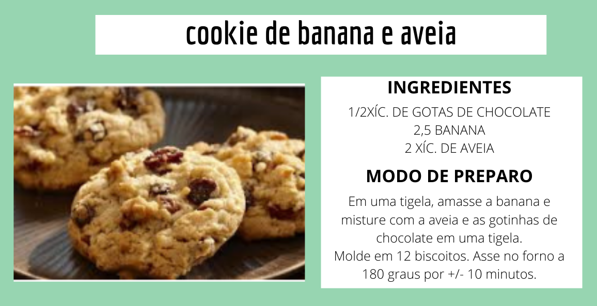
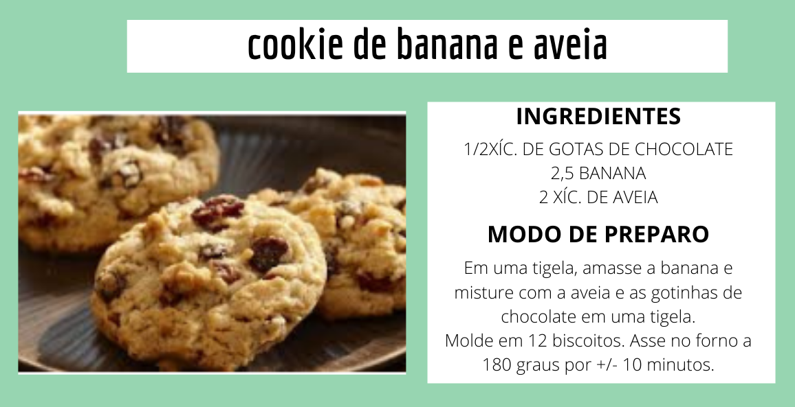

NutriTech
Login Cadastre-seR. Bella Crystal N°26
3376-8101
Ntech@gmail.com
(47) 98072-8290
NutriTech
NutriTech
 

Você acredita que não consegue emagrecer porque não tem foco?
Nós da NutriTech, temos o objetivo de ajudar pessoas que buscam melhorar a sua saúde através de uma alimentação saudável. Afinal o conceito de nutrição se baseia em uma alimentação completa e variada, de forma que atenda às necessidades do organismo. Trabalhando também com os guias alimentares que são opções práticas quando pensamos numa alimentação com qualidade, uma vez que fornece um conjunto de informações, recomendações e orientações sobre escolhas, preparo e consumo de alimentos.
Muitos acreditam em uma dieta universal, única para todos ou ainda apostam em dietas milagrosas, sem perceber que o que realmente conta, é a individualidade de cada indivíduo, com suas preferencias, estilo de vida, intolerâncias e necessidades específicas. Então, antes de qualquer leitura, reflita sobre uma coisa: não existe uma dieta estática e universal. Existem estratégias diferentes, para objetivos diferentes, segundo a necessidade e individualidade de cada humano. E é assim que o emagrecimento eficiente acontece.
A reeducação alimentar é um processo de mudanças e hábitos na alimentação. Ela consiste em doutrinar as pessoas à aprenderem a comer bem, de maneira saudável, mas sem necessariamente precisar se privar, de comer alguns alimentos quer goste. É através de pequenas mudanças que a reeducação vai se construindo e, aos poucos tornando a alimentação do indivíduo mais saudável e equilibrada. A reeducação alimentar é feita de forma personalizada e, para isso, devem ser consultados especialistas antes de qualquer decisão. Cada pessoa apresenta suas especialidades e, por isso, o processo é feito com base nos nutrientes que cada pessoa precisa.
Se você é um fisiculturista, um atleta profissional ou simplesmente exerce esportes, musculação, corrida, ciclismo, etc. para melhorar sua saúde, a nutrição esportiva desempenha um papel fundamental na otimização dos efeitos benéficos da atividade física. Tomar melhores decisões com sua nutrição e hidratação pode resultar em melhor desempenho, recuperação e prevenção de lesões. Profissionais de nutrição oferecem uma gama de serviços para apoiar a sua saúde e metas esportivas. Isso pode variar de um cardápio alimentar diário, a um plano abrangente de alimentação e nutrição e competições que se realizam a curto e médio prazo.